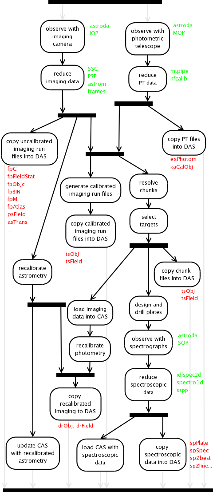

Sloan Digital Sky Survey Data Processing and Products
Introduction and Resources
The Early
Data Release (EDR) paper is the fundamental resource for
understanding the processing and data products from the SDSS,
describing the pipelines and contents of generated data
products. Successive data release papers:
DR1,
DR2,
DR3,
DR4,
DR5,
DR6 and
DR7,
describe changes between data
releases. The technical
summary provides more general information on the survey. The
SDSS Project Book,
written for a funding proposal early in the survey, is the most
exhaustive description of the survey but was last updated in 1997. The
SDSS publications web
page includes a list of additional SDSS technical papers.
The algorithms
page includes links to pages describing
algorithms used by the data reduction pipelines, and
the DAS quick
reference page has a table of the most commonly useful files in
the DAS.
The remainder of this page starts with a brief overview of data
processing, followed by sections that describe the steps in data
processing in detail. In addition to the more detailed description,
each detail section privedes references to papers that give additional
details, and a table of the files associated with that step of the
pipeline that can be found in the DAS. These tables include links to
descriptions of the formats of those files and templates that can be
used to generate DAS URLs for those files. The templates are in "C
printf" format, and can be used in C, bash, Python, and many other
languages to automatically generate URLs.
Most of the catalog data (but not the images themselves) have been
loaded into the Catalog Archive
Server (CAS) database. Users are often better off obtaining SDSS
data through a carefully constructed CAS query than they are
downloading the data files from the DAS. Simple queries can be used to
select just the objects and parameters of interest, while more complex
queries can be used to do complex calculations on many objects,
thereby avoiding the need to download the data on them at all.
Overview

- Imaging Observing
- We used three instruments when collecting imaging data: the
imaging
camera mounted on
the primary
2.5m SDSS telescope, which collected the imaging data
themselves; the 0.5m photometric telescope, which collected
images of photometric standard stars and reference fields; and a
10
micron all sky scanner (and later camera), used to detect
clouds.
- Imaging Data Reduction
- The SDSS data processing factory used a collection of
pipelines to process and calibrate the data from the imaging
camera and the photometric telescope, ultimately producing a
variety of data products including images with instrumental
signatures removed, a photometric solution for the night, and a
catalog of objects found in the data.
- Resolution and Calibration of Object Catalogs
- The resolve step declares one observation on an object the
primary observation, and others secondary, thereby avoiding
unintentional duplication of objects. This step ultimately
produces an astrometrically and photometrically calibrated
catalog of objects found in the data from the imaging camera.
- Selection of Targets for Spectroscopy
- The SDSS spectrographs collect spectra through a set of 640
fibers plugged into holes in aluminum plates. To prepare for
spectroscopy, we used software to select a set of targets from
catalogs (generated from the imaging data), design the plates,
and drill holes in the aluminum plates.
- Spectroscopic Observing
- The spectrographs mounted on the primary 2.5m telescope collected
spectra from each plate. There were two spectrographs, each of which
collected data from 320 fibers. Each spectrograph had two CCDs, so the
instrument produced a total of four images for each exposure.
- Spectroscopic Data Reduction
- The spectroscopic pipelines extracted one dimensional spectra
from the raw exposures produced by the spectrographs, calibrated
them in wavelength and flux, measured features in these spectra,
measured redshifts from these features, and classified the
objects as galaxies, stars, or quasars.
- Recalibration
- Improved astrometric and photometric calibrations became possible at
the end of the survey; we re-ran the astrometric pipeline on all
data using updated reference catalogs and improved centroiding,
and used a separate pipeline to refine the photometric
calibrations.
Data reduction could occur multiple times for both images and spectra.
Each time we repeated a data reduction, we labeled the output from that
reduction process with a distinct rerun number.
In the case of imaging rerun numbers, different decades in the rerun
number designate significant differences in the data reduction software. For
example, rerun 1 and rerun 2 of a given run would have been processed by
identical (or at least very similar) versions of the data reduction software,
while rerun 40 would have been reduced with a significantly different version
of the pipeline.
Imaging Observing
- Imager
- The imager collected survey data from the imager in drift scan (also
called TDI) mode. We use the term "run" to designate a single scan
along a great circle. The data acquisition system system divided the
data from each CCD into frames, stored as FITS files; the observatory
sent data to be processed as a collection of FITS files, each
corresponding to an arc along the great circle 1361 rows (539
arcseconds) long from a single CCD. In addition to the images
themselves, the data acquisition system also generated a variety of
metadata and other engineering files, which included pixel statistics
and a catalog of bright stars for each field.
DAS files generated in imager data collection
| File Type |
in/out |
Description |
DAS URL format |
format parameters |
| idReport |
out |
records runs collected on a night |
http://das.sdss.org/nightly/%05d/idReport-%05d.par |
mjd, mjd |
| idR |
out |
raw imaging frames |
in http://das.sdss.org/unprocessed/imaging/%d/idR-Run-%d-Fields-%04d-%04d.tar |
run, run, fieldfirst, fieldlast |
| idGang |
out |
assorted data gathered by the data acquisition system |
in http://das.sdss.org/unprocessed/imaging/%d/idGang-Run-%d-%s-%d-%d.tar |
run, run, (rows/cols), start, end |
| idFrameLog |
out |
camera position information for each frame |
http://das.sdss.org/nightly/%05d/idFrameLog-%06d-%d.par |
mjd, run, crate |
| opCamera |
out |
imaging camera geometry |
http://das.sdss.org/nightly/%05d/opCamera-%05d.par |
mjd, mjd (of generation) |
| opConfig |
out |
CCD readout configurations |
http://das.sdss.org/nightly/%05d/opConfig-%05d.par |
mjd, mjd |
| opECalib |
out |
CCD electronic calibrations |
http://das.sdss.org/nightly/%05d/opECalib-%05d.par |
mjd, mjd (of generation) |
- Photometric Telescope
- The photometric telescope collected images of standard stars
("primary standards") at a variety of airmasses throughout the night to
measure the photometric solution for the night, and images that sample
the survey area for each imaging run ("secondary patches") that can be
used to calibrate the runs from the imager using photometric solutions
generated by the photometric telescope.
DAS files generated in photometric telescope data collection
| File Type |
in/out |
Description |
DAS URL format |
format parameters |
| mdReport |
out |
records exposures collected on a night |
http://das.sdss.org/nightly/%05d/mdReport-%05d.par |
mjd, mjd |
- Infrared All-Sky Camera
- Clouds can be clearly seen at night in a 10 micron all-sky camera. We
used two such cameras at different times in the survey to
monitor the sky for cloud (and therefore non-photometric
conditions).
DAS files generated by the infrared all sky camera
or scanner
| File Type |
in/out |
Description |
DAS URL format |
format parameters |
| IRSC |
out |
A movie of the clouds for the night (original scanner) |
http://das.sdss.org/nightly/%05d/irsc-%05d.mpg |
mjd, mjd |
| IRCam movie |
out |
A movie of the clouds for the night (new camera) |
http://das.sdss.org/nightly/%05d/ircam-%05d.mpg |
mjd, mjd |
| IRCam plot |
out |
A plot of the sky sigma (useful for identifying clouds) with
time |
http://das.sdss.org/nightly/%05d/ircam-%05dgraph.png |
mjd, mjd |
| IRCam data |
out |
A log of statistics on ircam frames |
http://das.sdss.org/nightly/%05d/ircam-%05d.log |
mjd, mjd |
- Other metadata
- The observatory produces an assortment of engineering and other
metadata.
Other DAS files generated in observing
| File Type |
in/out |
Description |
DAS URL format |
format parameters |
| night log |
out |
A prose account of the night |
http://das.sdss.org/nightly/%05d/nightLog-%05d.txt |
mjd, mjd |
| idWeather |
out |
A log of weather data |
http://das.sdss.org/nightly/%05d/idWeather-%05d.par |
mjd, mjd |
Imaging Data Reduction
- Serial Stamp Collecting Pipeline (SSC)
- The SSC repackages some of the data produced by the data acquisition
system and produces postage stamps of bright reference stars.
DAS files read by the SSC pipeline
| File Type |
in/out |
Description |
DAS URL format |
format parameters |
| scPlan |
in |
the SSC processing plan |
http://das.sdss.org/imaging/%d/%d/ssc/scPlan-%d.par |
run, rerun, camcol |
| idReport |
in |
records runs collected on a night |
http://das.sdss.org/nightly/%05d/idReport-%05d.par |
mjd, mjd |
| opCamera |
in |
imaging camera geometry |
http://das.sdss.org/nightly/%05d/opCamera-%05d.par |
mjd, mjd (of generation) |
| opConfig |
in |
CCD readout configurations |
http://das.sdss.org/nightly/%05d/opConfig-%05d.par |
mjd, mjd |
| opECalib |
in |
CCD electronic calibrations |
http://das.sdss.org/nightly/%05d/opECalib-%05d.par |
mjd, mjd (of generation) |
| opBC |
in |
CCD bad pixel file |
http://das.sdss.org/nightly/%d/opBC-%d.par |
mjd, mjdbp (see fpPlan) |
| idR |
in |
raw imaging frames |
in http://das.sdss.org/unprocessed/imaging/%d/idR-Run-%d-Fields-%04d-%04d.tar |
run, run, fieldfirst, fieldlast |
| idGang |
in |
assorted data gathered by the data acquisition system |
in http://das.sdss.org/unprocessed/imaging/%d/idGang-Run-%d-%s-%d-%d.tar |
run, run, (rows/cols), start, end |
| koCat |
in |
the catalog of known bright stars |
http://das.sdss.org/imaging/%d/%d/ssc/koCat-%06d.fit |
run, rerun, run |
- Postage Stamp Pipeline (PSP) [2002AJ....123..485S,
section 4.3]
- The PSP measures the bias and global sky level,
and fits a model for the point spread function for each field.
DAS files used or generated by the PSP pipeline
| File Type |
in/out |
Description |
DAS URL format |
format parameters |
| psParam |
in |
PSP tunable parameters |
http://das.sdss.org/imaging/%d/%d/photo/psParam.par |
run, rerun |
| psPlan |
in |
the PSP processing plan |
http://das.sdss.org/imaging/%d/%d/photo/psPlan-%d.par |
run, rerun, camcol |
| opCamera |
in |
imaging camera geometry |
http://das.sdss.org/nightly/%05d/opCamera-%05d.par |
mjd, mjd (of generation) |
| opConfig |
in |
CCD readout configurations |
http://das.sdss.org/nightly/%05d/opConfig-%05d.par |
mjd, mjd |
| opECalib |
in |
CCD electronic calibrations |
http://das.sdss.org/nightly/%05d/opECalib-%05d.par |
mjd, mjd (of generation) |
| opBC |
in |
CCD bad pixel file |
http://das.sdss.org/nightly/%d/opBC-%d.par |
mjd, mjdbp (see fpPlan) |
| idB |
in |
bias vector |
http://das.sdss.org/imaging/%d/%d/photo/calib/idB-%06d-%c%d.fit |
run, rerun, run, filter, camcol |
| exPhotom |
in |
photometric solutions |
http://das.sdss.org/pt/solutions/%s/exPhotom-%05d.par |
version, mjd |
| kaCalObj |
in |
calibrated objects |
http://das.sdss.org/pt/objects/%s/%d/kaCalObj-%08d.fit |
version, stripe, sequenceId |
| psField |
out |
the initial photometric calibration and point spread
function fit by field (see
the extracting
PSF images page) |
http://das.sdss.org/imaging/%d/%d/objcs/%d/psField-%06d-%d-%04d.fit |
run, rerun, camcol, run, camcol, field |
- Astrometric Pipeline (astrom) [2003AJ....125.1559P]
- The astrometric pipeline calculates the astrometric solution. The astrometry and astrometry QA web pages
provide more information on the algorithms used and the proper
interpretation of the output.
DAS files used or generated by the astrom pipeline
| File Type |
in/out |
Description |
DAS URL format |
format parameters |
| asParam |
in |
astrom tunable parameters |
http://das.sdss.org/imaging/%d/%d/astrom/asParam.par |
run, rerun |
| asPlan |
in |
the astrom processing plan |
http://das.sdss.org/imaging/%d/%d/astrom/asPlan.par |
run, rerun |
| opConfig |
in |
CCD configuration, specifying the readout characteristics for each CCD |
http://das.sdss.org/nightly/%d/opConfig-%d.par |
mjd, mjd |
| opCamera |
in |
positions of the CCDs in the camera |
http://das.sdss.org/nightly/%d/opCamera-%d.par |
mjd, mjdcam |
| idReport |
in |
records runs collected on a night |
http://das.sdss.org/nightly/%05d/idReport-%05d.par |
mjd, mjd |
| idWeather |
in |
A log of weather data |
http://das.sdss.org/nightly/%05d/idWeather-%05d.par |
mjd, mjd |
| asTrans |
out |
tranformation coefficients from row, column to great circle
coordinates |
http://das.sdss.org/imaging/%d/%d/astrom/asTrans-%06d.fit |
run, rerun, run |
- Frames Pipeline (frames) [2002AJ....123..485S,
section 4.4]
- The frames pipeline applies flat field and bias corrections to
each frame, and interpolates values for pixels in bad columns
and bleed trails and those corrupted by cosmic rays to produce a
"corrected frame" (fpC file). It then detects bright objects and
estimates the varying sky background, detects fainter objects,
and measures a variety of properties for each object. Several
algorithms pages describe details of the processing performed by frames.
- Measures
of flux and magnitudes discribes the variety of methods
frames uses to measure the magnitude of each object,
including
radial
profiles,
fiber,
model,
cModel,
Petrosian and
PSF
magnitudes and
when to use each.
- Classification
and Morphology describes other measurements of objects,
including
star/galaxy separation,
model fits,
surface brightnesses,
ellipticities,
adaptive
moments and
isophotal quantities.
- IMPORTANT! Photometric
processing flags describes the variety of flags frames
sets for each object, essential for properly interpreting
the catalog.
- Flat
field creation and quality
- Sky measurement
- Deblending
describes how the frames pipeline decides if an initial single
detection is in fact a blend of multiple overlapping objects,
and, if so, how it separates (or "deblends") them.
- Creation
of imaging masks
DAS files used or generated by the frames pipeline
| File Type |
in/out |
Description |
DAS URL format |
format parameters |
| fpParam |
in |
frames tunable parameters |
http://das.sdss.org/imaging/%d/%d/photo/fpParam.par |
run, rerun |
| fpPlan |
in |
frames precessing plan |
http://das.sdss.org/imaging/%d/%d/photo/fpPlan-%d.par |
run, rerun, camcol |
| idReport |
out |
records runs collected on a night |
http://das.sdss.org/nightly/%05d/idReport-%05d.par |
mjd, mjd |
| koCat |
in |
the catalog of known bright stars |
http://das.sdss.org/imaging/%d/%d/ssc/koCat-%06d.fit |
run, rerun, run |
| opConfig |
in |
CCD configuration, specifying the readout characteristics for each CCD |
http://das.sdss.org/nightly/%d/opConfig-%d.par |
mjd, mjd |
| opECalib |
in |
CCD calibration file, specifying the electronic characteristics (read noise, gain, full-well, bias level, and linearity corrections) for each CCD |
http://das.sdss.org/nightly/%d/opECalib-%d.par |
mjd, mjdcal (see fpPlan) |
| opBC |
in |
CCD bad pixel file |
http://das.sdss.org/nightly/%d/opBC-%d.par |
mjd, mjdbp (see fpPlan) |
| idB |
in |
bias vector |
http://das.sdss.org/imaging/%d/%d/photo/calib/idB-%06d-%c%d.fit |
run, rerun, run, filter, camcol |
| psField |
in |
the initial photometric calibration and point spread function fit by field |
http://das.sdss.org/imaging/%d/%d/objcs/%d/psPlan-%06d-%d-%04d.fit |
run, rerun, camcol, run, camcol, field |
| asTrans |
in |
tranformation coefficients from row, column to great circle
coordinates |
http://das.sdss.org/imaging/%d/%d/astrom/asTrans-%06d.fit |
run, rerun, run |
| fpFieldStat |
out |
field statistics |
http://das.sdss.org/imaging/%d/%d/objcs/fpFieldStat-%06d-%d-%04d.fit |
run, rerun, run, camcol, field |
| fpObjc |
out |
the (uncalibrated) object catalog |
http://das.sdss.org/imaging/%d/%d/objcs/fpObjc-%06d-%d-%04d.fit |
run, rerun, run, camcol, field |
| fpC |
out |
the image itself, bias subtracted, flat fielded, and with bad pixels replaced by interpolated values (the "corrected frame") |
http://das.sdss.org/imaging/%d/%d/corr/fpC-%06d-%c%d-%04d.fit |
run, rerun, run, filter, camcol, field |
| fpBIN |
out |
a 4x4 binned version of the corrected image after
masking of objects and subtraction of sky, an image of the
estimate of the sky, an image of the uncertainty in the
sky estimate, and a table of bright star wings |
http://das.sdss.org/imaging/%d/%d/objcs/fpBIN-%06d-%c%d-%04d.fit |
run, rerun, run, filter, camcol, field |
| fpM |
out |
the frame masks (read using readAtlasImages) |
http://das.sdss.org/imaging/%d/%d/objcs/fpM-%06d-%c%d-%04d.fit |
run, rerun, run, filter, camcol, field |
| fpAtlas |
out |
the atlas images for all objects detected (read using readAtlasImages) |
http://das.sdss.org/imaging/%d/%d/objcs/fpAtlas-%06d-%d-%04d.fit |
run, rerun, run, camcol, field |
- Monitor Telescope Pipeline (mtpipe) [2006AN....327..821T]
- On nights the primary SDSS telescope collects imaging data,
the photometric telescope (PT), a second telescope at the same
site, collects images of two types of standard star fields:
primary and secondary. The primary fields contain standard stars
with well established magnitudes, and are used to determine a
photometric solution for the night. Secondary fields contain
stars that overlap imaging runs, and allow calibration of those
runs.
(The survey originally planned to use a 0.6m telescope, the
Monitor Telescope (MT), for these observations. We replaced the MT
with a 0.5m telescope before the start of data collection. We
called this new telescope the photometric telescope (PT) to
distinguish it from the original 0.6m MT, but most of the
reduction software, file formats and file name standards remained
the same, and retained their original names.)
DAS files used or generated by the mtpipe pipeline
| File Type |
in/out |
Description |
DAS URL format |
format parameters |
| mdReport |
in |
records exposures collected on a night |
http://das.sdss.org/nightly/%05d/mdReport-%05d.par |
mjd, mjd |
| metaFC |
in |
table of reference standard stars |
http://das.sdss.org/pt/metaFC.fit |
(none) |
| exPhotom |
out |
photometric solutions |
http://das.sdss.org/pt/solutions/%s/exPhotom-%05d.par |
version, mjd |
| kaCalObj |
out |
calibrated objects in the PT images |
http://das.sdss.org/pt/objects/%s/%d/kaCalObj-%08d.fit |
version, stripe, sequenceId |
- "Final" Calibration Pipeline (nfcalib) [2002AJ....123..485S,
section 4.5.3]
- fcalib generates the photometric calibration for a run
based on photometric telescope data (the output of the monitor
telescope pipeline). This was originally considered the "final"
calibration of a run, but now the "ubercal"
calibrations supersede these "final" calibrations.
The photometric
flux calibration algorithms page describes the calibration
and use of calibrated quantities in more detail, and includes
sections on
assessment of
photometric calibration,
converting SDSS counts to
SDSS (asinh) magnitudes (and vice versa),
converting SDSS to AB
magnitudes, and
converting SDSS
asinh magnitudes to fluxes.
Another
page describes conversion between SDSS magnitudes and
UBVRcIc, and ugriz colors of Vega and
the Sun.
You can determine which version of the mt calibrations (the
"version" parameters in the formats in the table describing
the monitor telescope pipeline outputs) by looking at the
mtVerPhotom parameter of the fpPlan file, below.
DAS files used or generated by the nfcalib pipeline
| File Type |
in/out |
Description |
DAS URL format |
format parameters |
| nfpParam |
in |
fcalib tunable parameters |
http://das.sdss.org/imaging/%d/%d/nfcalib/fpParam.par |
run, rerun |
| fpPlan |
in |
fcalib processing plan |
http://das.sdss.org/imaging/%d/%d/nfcalib/fpPlan-%d.par |
run, rerun, camcol |
| idReport |
in |
records runs collected on a night |
http://das.sdss.org/nightly/%05d/idReport-%05d.par |
mjd, mjd |
| asTrans |
in |
tranformation coefficients from row, column to great circle
coordinates |
http://das.sdss.org/imaging/%d/%d/astrom/asTrans-%06d.fit |
run, rerun, run |
| exPhotom |
in |
photometric solutions |
http://das.sdss.org/pt/solutions/%s/exPhotom-%05d.par |
version, mjd |
| kaCalObj |
in |
calibrated objects |
http://das.sdss.org/pt/objects/%s/%d/kaCalObj-%08d.fit |
version, stripe, sequenceId |
| fpObjc |
in |
the (uncalibrated) object catalog |
http://das.sdss.org/imaging/%d/%d/objcs/fpObjc-%06d-%d-%04d.fit |
run, rerun, run, camcol, field |
| fcPCalib |
out |
the photometric calibration of a run |
http://das.sdss.org/imaging/%d/%d/nfcalib/fcPCalib-%06d-%d.fit |
run, rerun, run, camcol |
- Imaging Quality Assurance
-
The imaging QA algorithms page describes
imaging quality assurance performed on the outputs of the
imaging pipeline.
Resolve Multiple Detections and Produce Calibrated Catalogs
A given area on the sky may be observed by multiple runs. The final
calibrated catalogs contain a field declaring whether the the specific observation
of the object is "primary," and the canonical measurement of the
object, or "secondary," a duplicate. These catalogs are generated
twice, once based on the single run in isolation by exportChunk, and
again in the resolve step. The catalogs produced by exportChunk
declare an object primary or secondary based on position alone,
introducing the possibility of inconsistencies due to errors in position; it is
possible, for example, that two separate observation of an object be
declared primary if the position measured for the object is slightly
different in each detection.
The catalog generated by the resolve step, on the other hand, uses an
operational database to search for other detections, and guarantees
that one and only one detection be declared primary.
The catalogs produced by exportChunk can be found in the run directory
of each run:
DAS files used or generated by the exportChunk
| File Type |
in/out |
Description |
DAS URL format |
format parameters |
| tsObj |
out |
the calibrated object catalogs |
http://das.sdss.org/imaging/%d/%d/calibChunks/%d/tsObj-%06d-%d-%d-%04d.fit |
run, rerun, camcol, run, camcol, rerun,
field |
| tsField |
out |
the calibrated field statistics |
http://das.sdss.org/imaging/%d/%d/calibChunks/%d/tsField-%06d-%d-%d-%04d.fit |
run, rerun, camcol, run, camcol, rerun,
field |
The catalogs produced by the resolve step are completed during target
selection, and the table in target selection
section gives their location. Note that the catalogs produced by
target selection includes fields that flag which objects were
selected for spectroscopy and why, while those generated by
exportChunk do not.
See the
EDR paper, 2002AJ....123..485S, section 4.7 for details on how
objects are resolved.
Selection of Targets for Spectroscopy and Tiling
The target
selection algorithms page describes how the pipeline performs
target selection, including selection of
Main Galaxy Sample,
Luminous Red Galaxies (LRG),
Quasars,
Stars,
ROSAT All-Sky Survey sources,
Serendipity,
and
SEGUE
targets. The target selection pipeline extracts calibrated catalogs
of objects and corresponding field by field statistics from the
operations database (which is itself loaded with data from the
imaging data reduction pipelines):
DAS files used or generated by the target selection pipeline
| File Type |
in/out |
Description |
DAS URL format |
format parameters |
| tsObj |
out |
the calibrated object catalogs |
http://das.sdss.org/imaging/inchunk_%s/stripe%d_mu%d_%d/%d/tsObj-%06d-%d-%d-%04d.fit |
(target or best), stripe, start mu, rerun type, camcol, run, camcol, rerun, field |
| tsField |
out |
the calibrated field statistics |
http://das.sdss.org/imaging/inchunk_%s/stripe%d_mu%d_%d/%d/tsField-%06d-%d-%d-%04d.fit |
(target or best), stripe, start mu, rerun type, camcol, run, camcol, rerun,
field |
The "rerun type" is 1 for best, 0 for target.
The tiling
algorithms page describes the process by which the spectroscopic
plates are designed and placed relative to each other.
Spectroscopic Observing
- Plate Plugging (plug)
- When the observatory is ready to observe a plate, the
observatory staff plugs optical fibers into the holes drilled
into the plates, and maps which fiber correponds to which hole
(and therefor which object) by shining light through each fiber.
DAS files generated in plate plugging
| File Type |
in/out |
Description |
DAS URL format |
format parameters |
| plPlugMapM |
out |
records which fiber corresponds to which hole in a
plate (and therefore objects, and what coordinates on the sky) |
http://das.sdss.org/spectro/1d_%d/%04d/1d/plPlugMapM-%04d-%d-%02d.par |
rerun, plate, plate, mjd, plugging index |
- Data Collection
- Observers mount cartridges containing the drilled, plugged
plates on the telescope, and collected exposures on each plate
until it reached a threshold estimated signal to noise and at
least three exposures had been collected.
DAS files generated in spectroscopic data collection
| File Type |
in/out |
Description |
DAS URL format |
format parameters |
| sdReport |
out |
records exposures collected on a night |
http://das.sdss.org/nightly/%05d/sdReport-%05d.par |
mjd, mjd |
| sdR |
out |
raw spectroscopic data frames |
http://das.sdss.org/unprocessed/spectro/%d/sdR-%c%d-%08d.fit.gz |
mjd, CCD (r or b), camera, exposure id |
Spectroscopic Data Reduction
- Two-dimensional Pipeline (spectro2d, also called idlspec2d) [2002AJ....123..485S,
section 4.10.1]
- The spectro2d pipeline reads science and calibration exposures
from the spectrographs, reduces and calibrates the science
exposures, extracts the one dimensional spectra from the two
dimensional exposures, stacks multiple exposures into combined
spectra, and produces corresponding masks and noise
estimates.
DAS files used or generated by the spectro2d pipeline
| File Type |
in/out |
Description |
DAS URL format |
format parameters |
| spPlan |
in |
the spectro2d processing plan |
http://das.sdss.org/spectro/2d_%d/%04d/spPlan-%04d-%d.par |
rerun, plate, plate, mjd |
| spPlancomb |
in |
the processing plan for combining spectra |
http://das.sdss.org/spectro/2d_%d/%04d/spPlancomd-%04d-%d.par |
rerun, plate, plate, mjd |
| plPlugMapM |
in |
records which fiber corresponds to which hole in a
plate (and therefore objects, and what coordinates on the sky) |
http://das.sdss.org/spectro/1d_%d/%04d/1d/plPlugMapM-%04d-%d-%02d.par |
rerun, plate, plate, mjd, plugging index |
| sdReport |
in |
records exposures collected on a night |
http://das.sdss.org/nightly/%05d/sdReport-%05d.par |
mjd, mjd |
| sdR |
in |
raw spectroscopic readouts |
in http://das.sdss.org/spectro/%d/spectroRaw.%d.tar |
mjd, mjd |
| spCFrame |
out |
calibrated spectra for a single CCD and exposure |
http://das.sdss.org/spectro/2d_%d/%04d/spCFrame-%c%d-%08d.par |
rerun, plate, CCD (r or b), camera,
exposure id |
| spPlate |
out |
the 640 combined flux- and wavelength-calibrated
spectra over all exposures (potentially spanning multiple
nights) for a given mapped plate |
http://das.sdss.org/spectro/2d_%d/%04d/spPlate-%04d-%d.par |
rerun, plate, plate, mjd |
The idlspec2d product
incorporates
specBS (also called the Princeton-1D pipeline), an
alternative to the standard spectro1d pipeline. specBS produces
the following files:
DAS files generated by the specBS
| File Type |
in/out |
Description |
DAS URL format |
format parameters |
| spZline |
out |
emission line fits |
http://das.sdss.org/spectro/2d_%d/%04d/spZline-%04d-%d.par |
rerun, plate, plate, mjd |
| spZall |
out |
all spectroscopic classifications and redshifts |
http://das.sdss.org/spectro/2d_%d/%04d/spZall-%04d-%d.par |
rerun, plate, plate, mjd |
| spZbest |
out |
spectroscopic classifications and redshifts |
http://das.sdss.org/spectro/2d_%d/%04d/spZbest-%04d-%d.par |
rerun, plate, plate, mjd |
- One-dimensional Pipeline (spectro1d) [2002AJ....123..485S,
section 4.10.2]
- The spectro1d pipeline measures emission and absorption
lines and classifies the objects based on the spectrum; algorithms
web pages describe
the emission
and absorption line fitting and
the
spectral type and redshift measurement algorithms. The
redshift
templates page provides the template spectra used for redshift measurement.
DAS files used or generated by the spec1d pipeline
| File Type |
in/out |
Description |
DAS URL format |
format parameters |
| spPlan1d |
in |
spectro1d processing plan |
http://das.sdss.org/spectro/1d_%d/%d/spPlan1d-%d-%04d.par |
rerun, plate, mjd, plate |
| spParam1d |
in |
tunable software parameters for the spectro1d pipeline |
http://das.sdss.org/spectro/1d_%d/%d/1d/spParam1d-%d-%04d.par |
rerun, plate, mjd, plate |
| spManLog |
in |
a record of which classifications were corrected by hand |
http://das.sdss.org/spectro/1d_%d/%d/1d/spManLog-%d-%04d.par |
rerun, plate, mjd, plate |
| spPlate |
in |
the 640 combined flux- and wavelength-calibrated
spectra over all exposures (potentially spanning multiple
nights) for a given mapped plate |
http://das.sdss.org/spectro/2d_%d/%04d/spPlate-%04d-%d.par |
rerun, plate, plate, mjd |
| plPlugMapM |
in |
records which fiber corresponds to which hole in a
plate (and therefore objects, and what coordinates on the sky) |
http://das.sdss.org/spectro/1d_%d/%04d/1d/plPlugMapM-%04d-%d-%02d.par |
rerun, plate, plate, mjd, plugging index |
| spDiag |
in |
spectro1d diagnostics |
http://das.sdss.org/spectro/1d_%d/%d/1d/spDiag-%d-%04d.par |
rerun, plate, mjd, plate |
| spSpec |
out |
line measurements and redshift determinations, as well
as the spectrum, for a single object, summing over all of
its exposures through a given mapped plate |
http://das.sdss.org/spectro/1d_%d/%d/1d/spSpec-%d-%04d-%03d.par |
rerun, plate, mjd, plate, fiber |
- Stellar Parameters Pipeline (sspp) [2007arXiv0710.5645L 2007arXiv0710.5778L 2007arXiv0710.5780A]
- The SEGUE stellar parameters pipeline produces a number of
files, stored together:
DAS files used or generated by the SSPP pipeline
| File Type |
in/out |
Description |
DAS URL format |
format parameters |
| sspp gzipped tar files |
out |
Output of the sspp pipeline |
http://das.sdss.org/spectro/sspp_%d/%04d-%05d.tgz |
rerun, plate, mjd |
Recalibration
- Astrometric Recalibration
- We recalibrated the astrometry for the final data release,
using updated reference catalogs and improved centroiding:
DAS files used or generated in astrometric recalibration
| File Type |
in/out |
Description |
DAS URL format |
format parameters |
| asParam |
in |
astrom tunable parameters |
http://das.sdss.org/imaging/%d/%d/fastrom/asParam.par |
run, rerun |
| asPlan |
in |
the astrom processing plan |
http://das.sdss.org/imaging/%d/%d/fastrom/asPlan.par |
run, rerun |
| opConfig |
in |
CCD configuration, specifying the readout characteristics for each CCD |
http://das.sdss.org/nightly/%d/opConfig-%d.par |
mjd, mjd |
| opCamera |
in |
positions of the CCDs in the camera |
http://das.sdss.org/nightly/%d/opCamera-%d.par |
mjd, mjdcam |
| idReport |
in |
records runs collected on a night |
http://das.sdss.org/nightly/%05d/idReport-%05d.par |
mjd, mjd |
| idWeather |
in |
A log of weather data |
http://das.sdss.org/nightly/%05d/idWeather-%05d.par |
mjd, mjd |
| asTrans |
out |
tranformation coefficients from row, column to great circle
coordinates |
http://das.sdss.org/imaging/%d/%d/fastrom/asTrans-%06d.fit |
run, rerun, run |
- Photometric Recalibration (Ubercal) [2008ApJ...674.1217P]
-
The "ubercal" recalibration recalibrates the survey by simultaneously solving for the
calibration parameters and relative stellar fluxes using
overlapping observations. The algorithm used decouples the problem of
relative calibrations from that of absolute calibrations; the
absolute calibration is reduced to determining a few numbers for
the entire survey.
See the ubercal
section of the photometric calibration algorithms page.
DAS files generated in photometric recalibration
| File Type |
in/out |
Description |
DAS URL format |
format parameters |
| drObj |
out |
the final "ubercal" and astrometrically recalibrated
object catalogs |
http://das.sdss.org/imaging/%d/%d/dr/%d/drObj-%06d-%d-%d-%04d.fit |
run, rerun, camcol, run, camcol, rerun,
field |
| drField |
out |
the final "ubercal" field statistics |
http://das.sdss.org/imaging/%d/%d/dr/%d/drField-%06d-%d-%d-%04d.fit |
run, rerun, camcol, run, camcol, rerun,
field |
- SuperNova Photometric Calibration [follows method of 2008MNRAS.386..887B]
-
DAS files generated in photometric
calibration of SuperNova data
| File Type |
in/out |
Description |
DAS URL format |
format parameters |
| tsObj |
out |
the calibrated object catalogs |
http://das.sdss.org/imaging/%d/%d/calibChunks/%d/tsObj-%06d-%d-%d-%04d.fit |
run, rerun, camcol, run, camcol, rerun,
field |
| tsField |
out |
the calibrated field statistics |
http://das.sdss.org/imaging/%d/%d/calibChunks/%d/tsField-%06d-%d-%d-%04d.fit |
run, rerun, camcol, run, camcol, rerun,
field |